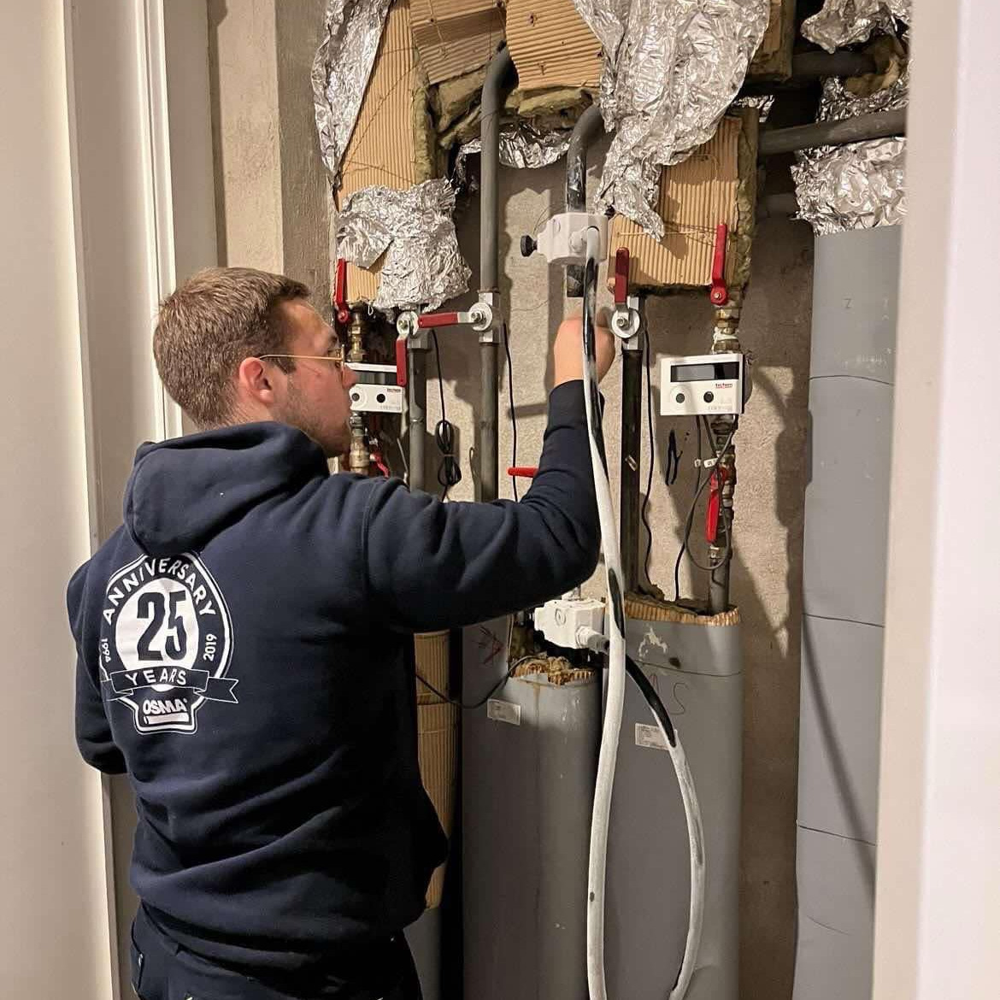
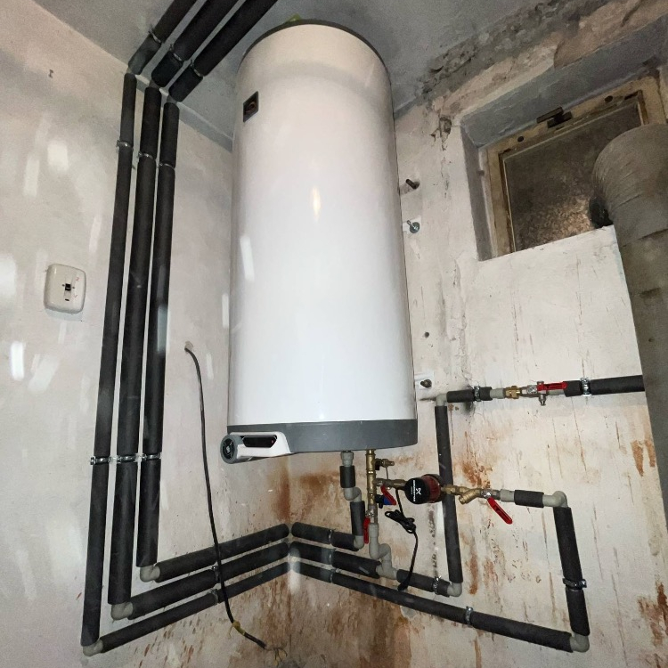
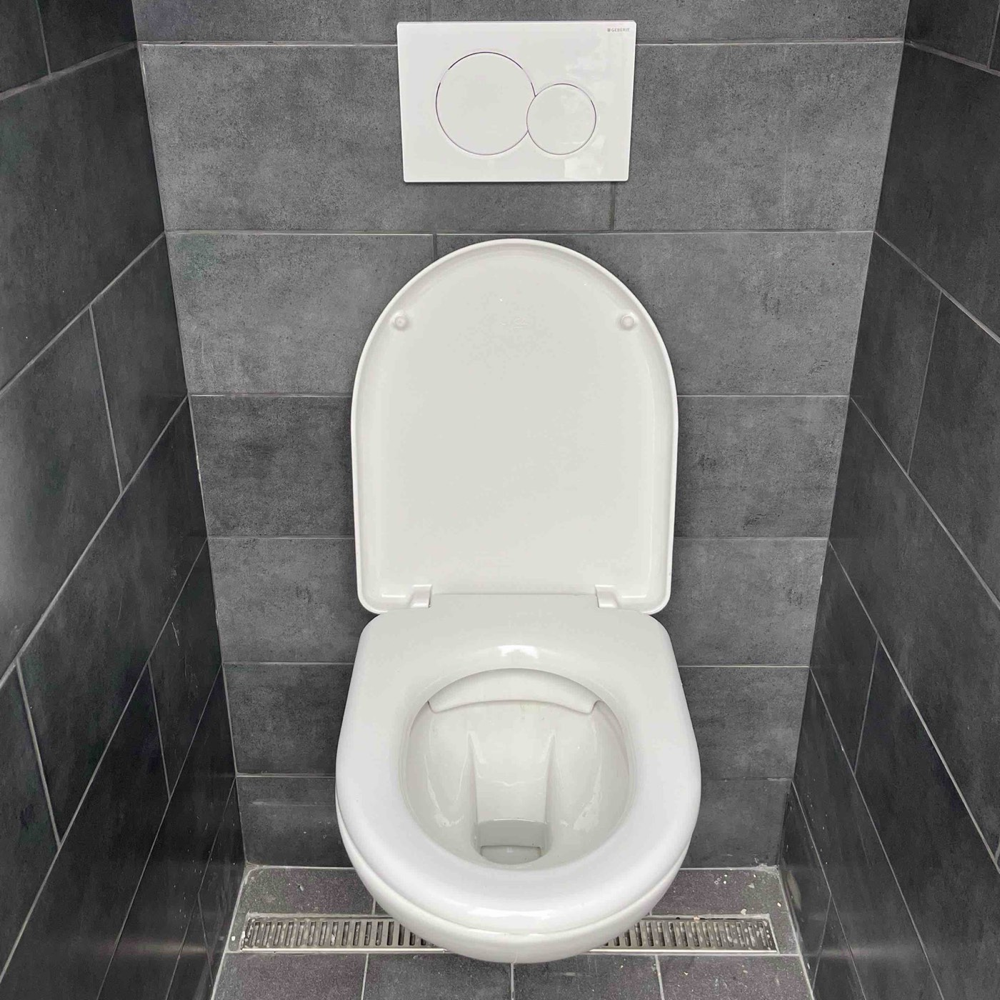
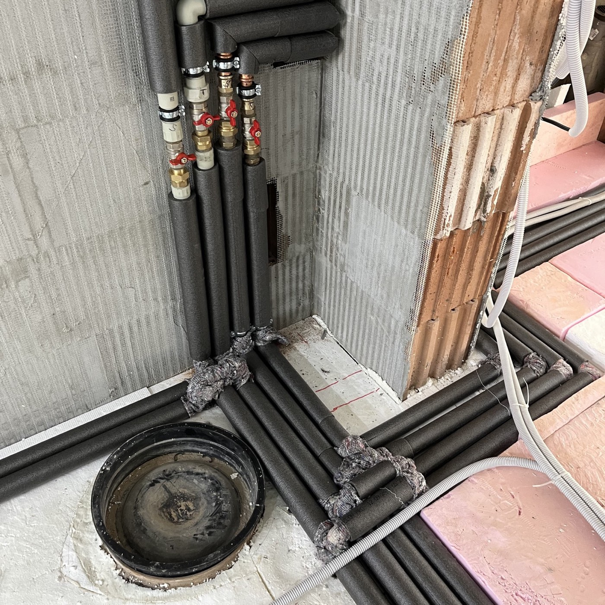
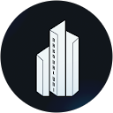

Instalatérské práce: voda, topení, kanalizace.
Instalatéři, kteří rozumějí významu okamžiku. Řešíme vodu, topení a kanalizaci: přijedeme v domluveném čase a práci dokončíme.
Proč: vidíme, kolik lidí z tohoto místa chce zavolat.
Proč: ukazuje, jestli lidé raději píšou formulář, nebo volají.
Pracovní doba a pohotovost: [potvrdit majitelem, viz README]
Naše služby
Od kapajícího kohoutku po rekonstrukci bytového domu nebo průmyslového objektu. Děláme všechno, co teče, hřeje nebo smrdí, rychle a poctivě.
- Výměny baterií, ventilů a zařizovacích předmětů
- Montáže dřezů, sprch, umyvadel a bojlerů
- Instalace a servis filtračních systémů a ohřívačů vody
- Opravy a kompletní rekonstrukce bytů, rodinných a bytových domů
- Kompletní nové instalace pro průmyslové objekty a novostavby
- Montáže a výměny radiátorů, ventilů a termostatických hlavic
- Instalace kotlů, tepelných čerpadel a podlahového topení
- Servis, odvzdušnění a opravy topných systémů
- Modernizace a úsporná řešení vytápění
- Kompletní topenářské práce při rekonstrukcích, novostavbách a průmyslových instalacích
- Opravy a výměny WC, sifonů a odpadních trubek
- Čištění, revize a přepojení kanalizace
- Rekonstrukce stoupaček a odpadních rozvodů
- Kompletní realizace kanalizací v bytech, domech i průmyslových objektech
Kde působíme
Působíme v Královéhradeckém a Pardubickém kraji. Větší projekty řešíme i mimo ně.
Královéhradecký a Pardubický kraj [potvrdit okresy a maximální vzdálenost]
Adresa firmy: Struha 794, 517 54 Vamberk
Mapa: otevřít Struha 794, Vamberk [vložit mapu s vyznačenou oblastí]
O společnosti Janak instalatérství
Jsme dva bratři, kteří založili moderní instalatérskou firmu. Děláme věci poctivě, moderně a s úsměvem. Nejsme žádní malí kluci s kufříkem na nářadí.
Za sebou máme zakázky v Královéhradeckém a Pardubickém kraji a zkušenosti z festivalového prostředí, kde jsme se podíleli na přípravě vody a technického zázemí. [potvrdit reference]
Ať jde o drobnou opravu, kompletní rekonstrukci nebo rozvody pro areál, u nás platí jedno: poctivá práce a domluvená cena.
Proč si vybrat nás?
Spolehlivost
Přijedeme v domluveném čase a práci dokončíme.
Transparentní ceny
Jasné ceny bez skrytých poplatků, předem domluvená kalkulace.




Reference
Důvěra našich klientů je pro nás největší odměnou. Jsme rádi, že se k nám naši partneři vracejí a doporučují nás dál. Podívejte se, co o nás napsali.
Kuba Jimbo
Musím se s Vámi podělit o velmi pozitivní zkušenost s panem instalatérem Janakem - po letech se nám rozbil bojler a začal protékat, pan Janák dojel hned večer mrknout a diagnostikovat, co se děje a po společné dohodě objednal nový bojler a dodělal expanzní nádobu a i přes vysoké vytížení jsme měli do pár dní hotovo. Dokonce si na nás našel čas v neděli, protože jiné dny byly kompletně zabrané a realizaci provedl během dopoledne. Skvělá zkušenost, moc děkujeme, velmi proklientský přístup, výborná komunikace a rozhodně doporučujeme a budeme příště "volat Kevina"! :))
Petr Boura
Otřesná zkušenost. Naprosto nedoporučuji – varování především pro SVJ. Firma nechala v kooperaci se zedníky naší koupelnu tři týdny v nepoužitelném stavu, dodaný materiál naprosto neodpovídal objednávce a komunikace byla zavádějící a nepravdivá. Klidně by Vám úplně zprznili koupelnu. Vymlouvá se, že bude řešit jen s SVJ. Při odchodu si odvezli část našeho původního vybavení a odmítají řešit náhradu. Celou záležitost budu řešit prostřednictvím advokáta. Již chápu, že tak apelovali na 50% zálohu.

Nakovalyni
Po dlouhé době při naší zdlouhavé rekonstrukci konečně přístup a řemeslníci, které mohu maximálně pochválit a rád ho budu sdílet se všemi ostatními 🤩. Chlapi mi pomohli už od výběru technologie, vše srozumitelně vysvětlili, spočítali a namontovali. Dokonce zdarma opravili i drobnosti po předchozím instalatérovi! Realizace trvala přibližně 2 týdny a vše bez jediného problému. Doporučuji a přeji hodně štěstí 🤞
Václav Hamáček
Naprostá spokojenost. Rychlá pomoc v situaci s náhlou domovní havárií. Výborná komunikace a kvalitní práce. Doporučuji.
Marie Gatik
Chtěla bych pochválit mladého kluka při opravě záchodu.Technik přijel v domluveném čase a opravil kvalitně a čistě.Pokud budu v budoucnu potřebovat instalatérské služby, určitě se na tuto firmu znovu obrátím.
Texty recenzí jsou z původního webu. Hodnocení a odkaz na Google profil [doplnit zdroj a počet hodnocení]
Kontaktujte nás
Máte problém s instalacemi nebo potřebujete poradit? Zavolejte nebo napište.